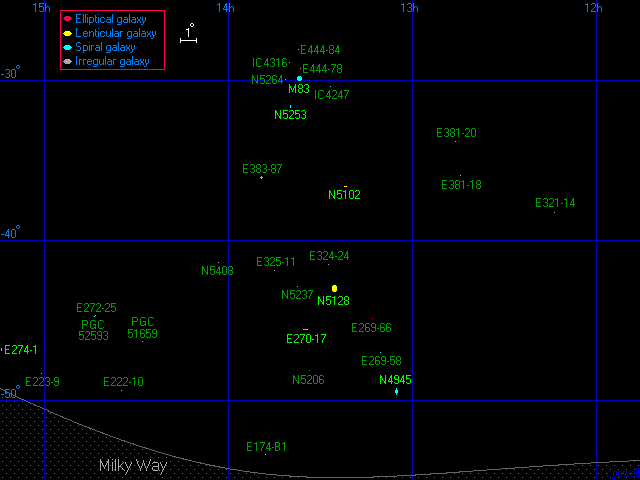
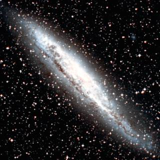
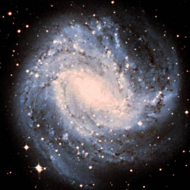
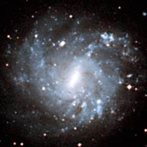
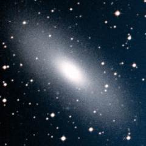
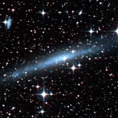
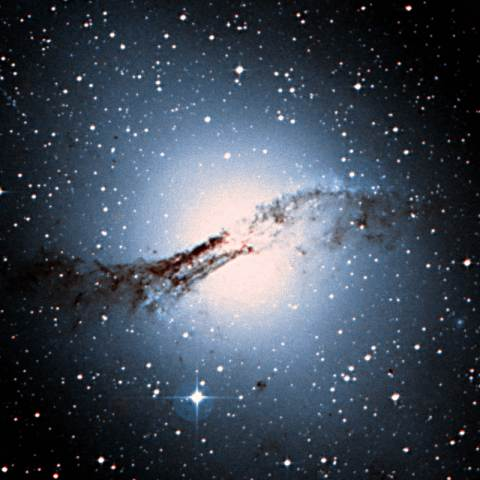
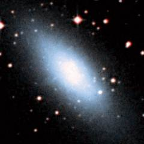
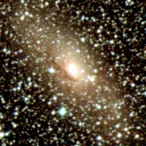
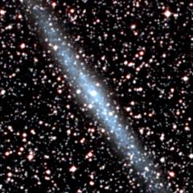

التجمع المجري NGC 5128 هو مجموعة مجرات مشهورة أخرى في نصف الكرة الجنوبي. تحتوي هذه المجموعة على عدة مجرات لامعة، خاصة NGC 5128 وM83. تُعد NGC 5128 خامس ألمع مجرة في السماء وهي واحدة من أكثر المجرات غرابة في المظهر في الكون القريب.

أدناه - مجرتان كبيرتان في التجمع المجري NGC 5128. (على اليمين) NGC 4945 هي ثاني أكبر مجرة في هذه المجموعة، وهي مجرة حلزونية تُرى تقريبًا من الحافة. (على اليسار) M83 هي مجرة حلزونية مشهورة جدًا تُرى من الأمام.
 |
 |
| NGC 4945 | M83 |
هذه قائمة بأهم المجرات في مجموعة NGC 5128. تقع هذه المجموعة بالقرب من مستوى درب التبانة، وقد تكون هناك مجرات خلف مستوى درب التبانة في هذه المجموعة لم يتم اكتشافها بعد. تم تضمين مجرة الدائرة (ESO 97-13) في هذه القائمة لأنه على الرغم من أنها تقع على بعد 25 درجة إلى الجنوب من مركز المجموعة، إلا أنها على الأرجح تقع على المسافة الصحيحة لتُعتبر عضوًا في المجموعة.
| قائمة المجرات الرئيسية في مجموعة NGC 5128 | ||||||||
|---|---|---|---|---|---|---|---|---|
| الاسم | الإحداثيات الاستوائية مطلع مستقيم RA ميل Dec |
القدر الأزرق | النوع | الحجم الزاوي دقائق قوسية(′) |
الحجم (ألف سنة ضوئية) |
سرعة التقهقر (كم/ث) |
أسماء أخرى | |
| ESO 321-14 | 12 13.8 | -38 14 | 15.9 | Irr | 1.4 | 5 | 907 | |
| ESO 381-18 | 12 44.4 | -35 56 | 15.7 | Sm | 0.8 | 5 | 901 | |
| ESO 381-20 | 12 46.0 | -33 50 | 14.7 | Irr | 3.0 | 10 | 884 | |
| NGC 4945 | 13 05.4 | -49 28 | 9.3 | SBc | 20.0 | 80 | 798 | |
| ESO 269-58 | 13 10.6 | -47 00 | 13.2 | Sa | 3.0 | 10 | 642 | |
| ESO 269-66 | 13 13.2 | -44 53 | 14.1 | E | 1.7 | 5 | 1041 | |
| NGC 5068 | 13 18.9 | -21 03 | 10.6 | SBc | 7.2 | 30 | 974 | |
| NGC 5102 | 13 21.9 | -36 38 | 10.3 | S0 | 8.7 | 35 | 737 | |
| NGC 5128 | 13 25.4 | -43 01 | 7.7 | S0 | 25.7 | 105 | 795 | |
| IC 4247 | 13 26.8 | -30 22 | 14.6 | Sbc | 1.3 | 5 | 697 | |
| ESO 324-24 | 13 27.6 | -41 29 | 12.9 | Irr | 3.2 | 15 | 766 | |
| NGC 5206 | 13 33.7 | -48 09 | 12.0 | S0 | 3.7 | 15 | 796 | |
| ESO 270-17 | 13 34.8 | -45 32 | 11.8 | SBm | 12.0 | 50 | 1060 | |
| ESO 444-78 | 13 36.5 | -29 14 | 15.9 | Irr | 1.2 | 5 | 850 | UGCA 365 |
| M83 | 13 37.0 | -29 52 | 7.9 | SBc | 12.9 | 50 | 786 | NGC 5236 |
| ESO 444-84 | 13 37.3 | -28 03 | 15.5 | Irr | 1.3 | 5 | 865 | |
| NGC 5237 | 13 37.7 | -42 51 | 13.2 | Sa | 1.9 | 10 | 598 | |
| NGC 5253 | 13 39.9 | -31 38 | 10.7 | Sd | 5.0 | 20 | 670 | |
| IC 4316 | 13 40.3 | -28 53 | 14.6 | Irr | 1.7 | 5 | 854 | |
| NGC 5264 | 13 41.6 | -29 55 | 12.5 | Irr | 2.5 | 10 | 751 | |
| ESO 325-11 | 13 45.0 | -41 52 | 14.0 | Irr | 2.7 | 10 | 782 | |
| ESO 174-B1 | 13 48.0 | -53 21 | 14.4 | S0 | 2.8 | 10 | 887 | PGC 48937 |
| ESO 383-87 | 13 49.3 | -36 04 | 11.7 | SBd | 4.5 | 20 | 578 | |
| NGC 5408 | 14 03.4 | -41 23 | 12.2 | Irr | 1.6 | 5 | 733 | |
| ESO 97-13 | 14 13.2 | -65 20 | 12.0 | Sb | 6.9 | 30 | 578 | Circinus |
| PGC 51659 | 14 28.1 | -46 18 | 15.0 | Irr | 2.4 | 10 | 585 | A1424-46 |
| ESO 222-10 | 14 35.0 | -49 24 | 15.9 | Irr | 1.0 | 5 | 806 | |
| ESO 272-25 | 14 43.4 | -44 42 | 14.8 | Irr | 0.5 | 2 | 804 | |
| PGC 52593 | 14 43.5 | -44 43 | 14.5 | Irr | 1.5 | 5 | 870 | A1440-44 |
| ESO 223-09 | 15 01.1 | -48 18 | 13.2 | Irr | 2.6 | 10 | 748 | |
| ESO 274-01 | 15 14.2 | -46 49 | 11.7 | Scd | 11.0 | 45 | 674 | |
أدناه - ثلاث مجرات أخرى في التجمع المجري NGC 5128. (على اليمين) NGC 5068 هي مجرة حلزونية صغيرة تقع على بعد حوالي 20 درجة إلى الشمال من مركز المجموعة. (في الوسط) NGC 5102 هي مجرة عدسية. (على اليسار) ESO 270-17 هي مجرة غير منتظمة (أو ربما حلزونية) تُرى من الحافة وتكون معتمة إلى حد ما.
 |
 |
 |
| NGC 5068 | NGC 5102 | ESO 270-17 |
في الأسفل تظهر المجرة NGC 5128. هذه مجرة رائعة. تم تصنيفها رسميًا على أنها مجرة عدسية (مجرة تحتوي على انتفاخ مركزي محاط بقرص ناعم من النجوم)، لكنها تبدو غريبة جدًا - ولم يتأكد علماء الفلك من أنها مجرة بالفعل إلا في عام 1952. تقطع المجرة شريط سميك ومظلم من الغبار، وهي أيضًا مصدر قوي لموجات الراديو - يُطلق عليها علماء الفلك الراديويون عادة اسم قنطورس A لأنها كانت أول مصدر رئيسي لموجات الراديو يتم اكتشافه في هذه الكوكبة في الخمسينيات. وهي أقرب مجرة راديوية. تُظهر الملاحظات باستخدام التلسكوبات الراديوية وتلسكوبات الأشعة تحت الحمراء أن NGC 5128 ابتلعت مجرة حلزونية على الأرجح قبل حوالي خمسمائة مليون سنة، وأن آثار هذا التصادم هي التي تسبب الانبعاثات الراديوية القوية.

أدناه - ثلاث مجرات أخرى مرتبطة بالتجمع المجري NGC 5128. (على اليمين) NGC 5253 هي مجرة حلزونية/غير منتظمة صغيرة بالقرب من M83. (في الوسط) ESO 97-13 هي مجرة حلزونية تُعرف أكثر باسم مجرة الدائرة. إنها مجرة معتمة جدًا تقع على بعد عشرين درجة إلى الجنوب من المجموعة على الجانب الآخر من درب التبانة. (على اليسار) ESO 274-1 هي مجرة حلزونية معتمة تُرى من الحافة وتقع على الجانب الأيسر من المجموعة.
 |
 |
 |
| NGC 5253 | ESO 97-13 | ESO 274-01 |
| خصائص التجمع المجري NGC 5128 | ||
|---|---|---|
| الإحداثيات الاستوائية | RA=13h40m | Dec=-40° |
| الإحداثيات المجرية | l=315° | b=+20° |
| الإحداثيات المجرية الفائقة | L=160° | B=0° |
| المسافة إلى مركز المجموعة المجرية | 14 مليون سنة ضوئية | |
| عدد المجرات الكبيرة | 7 | |
| أسماء أخرى للمجموعة | مجموعة قنطورس A مجموعة M83 |
|